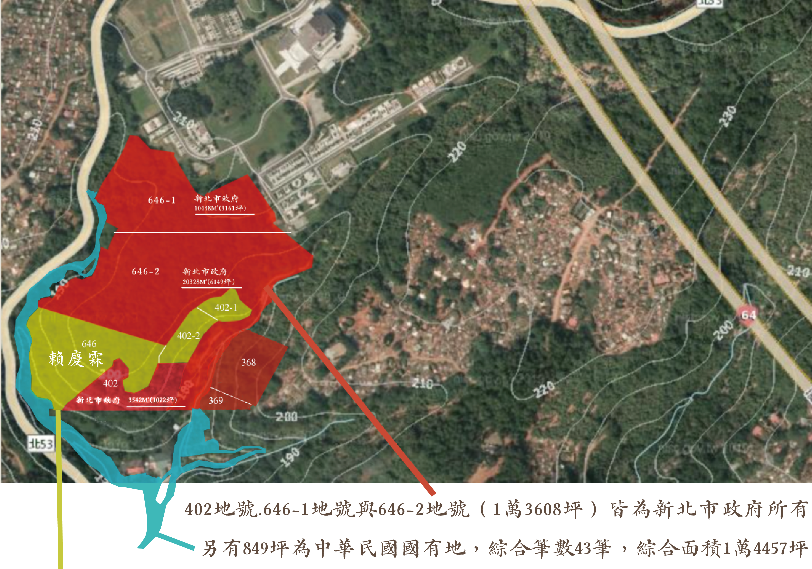

希望共同成就創造17685坪全國最大ESG低碳環保樹葬
公墓土地協議架構開闢為公共樹葬設施
五股觀音山森林公園生命生態一體化的環保樹葬示範基地

646地號與402-1地號與402-2地號(3228坪)皆為陳情人賴慶霖個人所有
聯合請願發起人賴慶霖
央求新北市政府將完全被您13,608坪公墓用地包圍的私人公墓用地
進行徵收或協議價購，聯合請願政府能否積極面對2025年後台灣已經超越日本超高齡社會的民「死問題」優先開闢全國首座ESG樹葬園區


我們懷抱著對天地自然的深切敬意，懇請新北市政府將完全被您13,608坪公墓用地包圍產權清楚且乾淨的私人公墓用地進行徵收協議價購，盼望能得到全國愛惜天地.愛護大自然生態.共護殊勝觀音山的大國民應許聯合向政府聯合請願環保一方♻️️提住處淨土。
本人也願意以低於市價的公墓用地價格提供給政府建設。
讓國家開闢一個屬於台灣人民的國家級低碳環保樹葬基地。
請加入我們的聯合請願，讓我們對家屬的愛與對ESG自然環境責任同行。
讓新北市青山永續森林長存，讓觀音山的生態之美得以世代相傳。您的參與！
就是守護台灣大自然絕美生態的最佳承諾